Bahçelievler · Yenibosna · Özel tasarım mobilya
Odanın son hâli, ölçüsüne göre ve tek ekipten
TV ünitesinden giyinme odasına, banyo dolabından petek kapamaya; dolabı, çıtalı paneli, gizli ışığı ve lake boyayı aynı ekip yapıyor. Arkadaki fotoğrafların hepsi bizim işlerimiz.
Odanızın fotoğrafını göndererek başlayabilirsiniz.
- Ölçüye özelDuvar, kolon, petek ve tavan yüksekliğine göre.
- Tek ekipDolap, çıtalı panel, ışık ve lake boya birlikte.
- Yenibosna'da adresAhmet Yesevi Cd. No:120, Bahçelievler.
- Google'da 4,993 değerlendirme · yorumları biz seçmedik
Size uygun başlangıç
Siz hangi ihtiyaçtasınız?
Odayı baştan yaptırıyorum
Salonun TV duvarı, yatak odasının paneli ya da giyinme odası; dolabı, ışığı ve duvarı birlikte planlayalım.
Odanın tamamı için yazınBanyoyu yenileyeceğim
Lavabo dolabı, makine yerli boy dolap, ışıklı ayna; eski PVC duvar ve hazır dolap yerine.
Banyo için yazınTek bir köşe için
Portmanto, petek kapama, çamaşır makinesi dolabı ya da tek bir TV ünitesi. Küçük işler de fotoğraflarımızda var.
Bir köşe için yazınFiyat araştırıyorum
Fiyat ölçüye, kapak yüzeyine ve ışığa göre değişir. Fotoğraf ve kaba ölçü gönderin, size göre konuşalım.
Fiyat için yazın
Çözümlerimiz
Odanıza göre, ölçüsüne göre.
Hazır mobilya köşeye, kolona, petek önüne oturmaz. Biz dolabı, paneli ve ışığı odanın ölçüsüne göre yapıyoruz.
- 01
TV ünitesi ve duvar ünitesi
LED'li raflar, mermer görünümlü panel, ceviz kaplama; duvarın tamamı tek tasarım.
- 02
Banyo dolabı ve banyo yenileme
Lavabo dolabı, makine yerli boy dolap, ışıklı ayna; istenirse banyonun tamamı.
- 04
Giyinme odası ve gardırop
Cam kapaklı ışıklı giyinme odası, gömme dolap, makyaj masası, genç odası.
- 06
Çıtalı duvar paneli ve petek kapama
Tavana kadar çıtalı panel, tavan bandında ışık, lake petek kapama.
Başlangıç noktası
Odanızı bize gösterin.
Ne istediğinizi bir iki cümleyle yazın, odanın fotoğrafını ekleyin; birlikte değerlendirelim.
Fotoğrafınızı gönderinŞeker'de bir iş nasıl ilerler?
Siz anlatın, ölçüsünü biz alalım.
Fotoğraftan teslime beş adım.
- 01
Bize yazarsınız
Odanın birkaç fotoğrafını ve aklınızdaki işi WhatsApp'tan gönderirsiniz; Instagram'da beğendiğiniz bir iş varsa onu da eklersiniz.
- 02
Ölçü
Kesin ölçüyü yerinde alıyoruz; kolon, tesisat, petek ve priz yerleri o gün netleşir.
- 03
Renk ve malzeme
Lake rengi, kaplama, kulp, ışığın yeri ve rengi birlikte seçilir.
- 04
İmalat
Parçalar ölçünüze göre üretilir.
- 05
Montaj
Yerinde montaj yapılır, ışıklar bağlanır ve teslim edilir.
İşçilik
İşçilik detayda belli olur.
"Kaliteliyiz" demek yerine fotoğraflarda görüneni yazıyoruz.
- Yüzey
- Mat lake (açık gri, krem, beyaz), ceviz kaplama, mermer görünümlü panel
- Panel
- Tavana kadar dikey çıtalı duvar paneli; yatak başı, TV duvarı, antre
- Aydınlatma
- Tavan bandı, raf altı, ayna arkası ve dolap içi gizli şerit ışık
- Ayna
- Oval, yuvarlak ve yarım ay; arkası ışıklı
Detaylar
Gerçek projeler
Yaptığımız işler konuşsun.
Hepsi Instagram hesabımızda paylaştığımız işler. Kaydırarak diğerlerini görün.
TV ünitesi
Tüm TV ünitesi işleriMermer görünümlü panelli TV duvarı; iki yanda raf altları ışıklı, çerçeveli kapaklı açık gri dolaplar Ceviz kaplama TV duvarı, üstte tavana kadar gri kapaklar, yanlarda ışıklı cam vitrin Krem lake TV ünitesi; TV panelinin çevresinde ve tavan bandında sıcak ışık, yanlarda çıtalı panel Çıtalı panel duvar, altı ışıklı asma alt modül ve iki yanda füme cam vitrin
Banyo
Tüm banyo işleriArkası ışıklı oval ayna, açık raflar, gömme lavabolu tezgâh ve çıtalı boy dolap Arkası ışıklı ayna, asma klozet, beyaz lavabo dolabı ve tavana kadar boy dolap 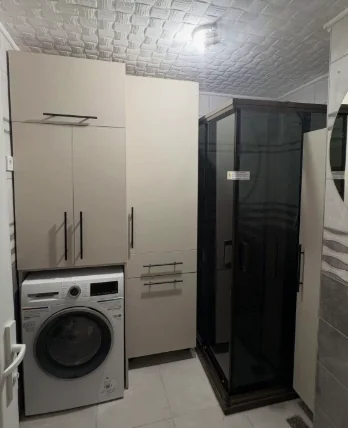
Çamaşır makinesinin üstünde ve yanında boy dolaplar, yanında siyah profilli duşakabin Ceviz kapaklı lavabo dolabı, aynalı üst dolap ve yanında ceviz boy dolap 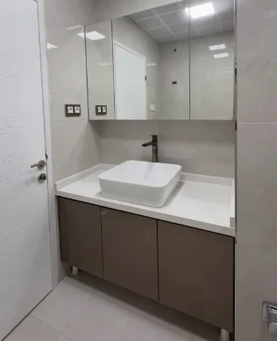
Tezgâh üstü lavabo, antrasit kapaklı alt dolap ve aynalı üst dolap 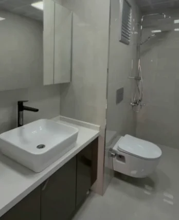
Tezgâh üstü lavabolu antrasit dolap, aynalı üst dolap ve asma klozet 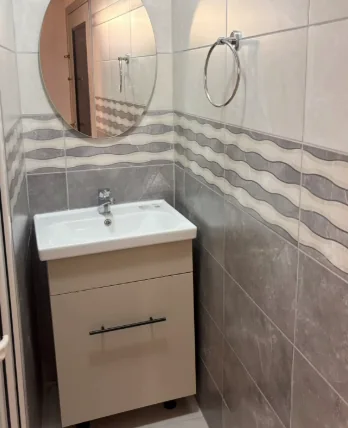
Küçük banyoda krem lavabo dolabı, yuvarlak ayna ve dalgalı desenli fayans 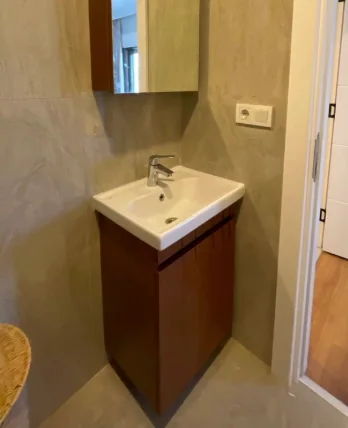
Dar banyoda ceviz kapaklı lavabo dolabı ve üst dolap
Mutfak
Tüm mutfak işleriBeyaz tezgâh, açık gri alt dolaplar ve füme cam kapaklı boy dolap Mutfakta açık çekmeceler, eviye dolabı ve boy dolaplar 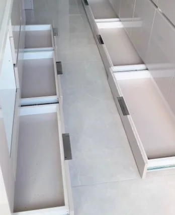
Tavana kadar dolaplı dar mutfakta yan yana açılmış çekmeceler 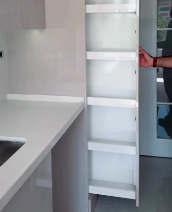
Boy dolabın içinde çekme raflı kiler
Giyinme odası
Tüm giyinme odası işleriKöşeyi dönen, cam kapaklı ve içi ışıklı giyinme odası 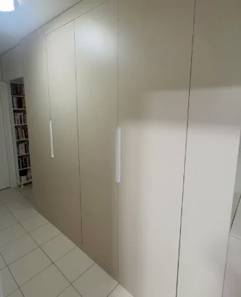
Koridorda tavana kadar düz kapaklı gömme dolap 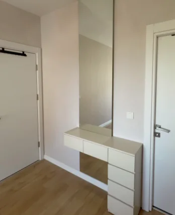
Boy dolabın yanına yerleştirilmiş çekmeceli makyaj masası
Portmanto ve antre
Tüm portmanto ve antre işleriAntrede ceviz çıtalı duvar, yarım ay ayna ve asma beyaz konsol 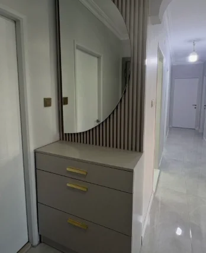
Çıtalı panel önünde yuvarlak aynalı, çekmeceli portmanto Kemerli koridorda çıtalı panelli, yarım ay aynalı portmanto 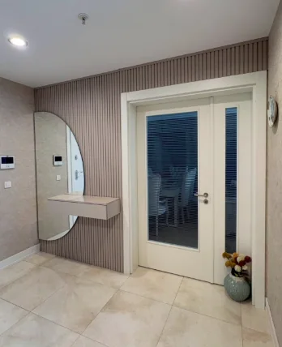
Çift kanatlı kapının yanında yarım ay aynalı asma konsol 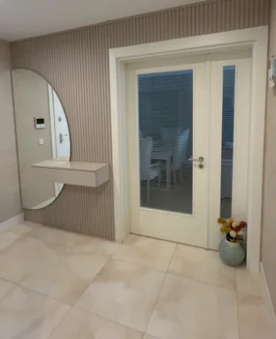
Antrede çift kanatlı camlı kapı, yanında ayna ve asma konsol
Duvar paneli
Tüm duvar paneli işleriYatak odasında tavana kadar çıtalı duvar paneli, tavan bandında ışık, arkası ışıklı yuvarlak ayna ve asma komodin Çıtalı panel duvar, altı ışıklı asma alt modül ve iki yanda füme cam vitrin Krem lake TV ünitesi; TV panelinin çevresinde ve tavan bandında sıcak ışık, yanlarda çıtalı panel Çıtalı panel önünde yuvarlak aynalı, çekmeceli portmanto Antrede ceviz çıtalı duvar, yarım ay ayna ve asma beyaz konsol Kemerli koridorda çıtalı panelli, yarım ay aynalı portmanto
Bahçelievler, Yenibosna Merkez
Ahmet Yesevi Caddesi, No:120.
Şeker Mobilya, Yenibosna'da özel tasarım mobilya üreten bir mobilya imalatçısı. İşlerimizi bitirdikçe Instagram'da paylaşıyoruz.
| Adres | Yenibosna Merkez, Ahmet Yesevi Cd. No:120, 34192 Bahçelievler/İstanbul |
|---|---|
| Plus code | 2R3Q+4H Bahçelievler |
| Telefon | 0535 761 85 38 |
| @sekermobilya | |
| 4,9 · 93 değerlendirme | |
| Çalışma saati | Bugünkü saat Google Haritalar'da; gelmeden önce arayın |
S.S.S.
Merak edilenler.
Bahçelievler dışına da geliyor musunuz?
Semtinizi yazın; ölçü için gelip gelemeyeceğimizi hemen söyleyelim.
Fiyat nasıl belirleniyor?
Fiyat ölçüye, kapak ve panel yüzeyine, ışık miktarına göre değişir. Fotoğraf ve kaba ölçü gönderirseniz ilk konuşmada daha net bir şey söyleyebiliriz.
Fotoğraf göndererek bilgi alabilir miyim?
Evet. Odanın birkaç fotoğrafı ve kaba ölçüsüyle başlıyoruz; kesin ölçüyü yerinde alıyoruz.
Tek bir parça için de geliyor musunuz?
Evet. Portmanto, petek kapama, lavabo dolabı ya da tek bir TV ünitesi de yapıyoruz.
Dolap dışında hangi işleri yapıyorsunuz?
Çıtalı duvar paneli, gizli ışık, ışıklı ayna, lake petek kapama ve kapı lake boyama; Instagram'daki işlerimizde hepsinin örneği var.
Hangi yüzeyler var?
İşlerimizde en çok mat lake (açık gri, krem, beyaz), ceviz kaplama ve mermer görünümlü panel kullanıyoruz. Seçimi örnekleri görerek yapıyoruz.
Işıklı raf ve LED ayna yapıyor musunuz?
Evet. Raf altı, tavan bandı, dolap içi ve ayna arkası ışık işlerimizin çoğunda var; ışığın yeri ölçü günü konuşulur.
Son adım
Odanızı birlikte değerlendirelim.
Aklınızdaki işi ve odanızı anlatın. Fotoğraf ve kaba ölçü gönderirseniz ilk konuşmada daha net bir şey söyleyebiliriz.
- Ahmet Yesevi Cd. No:120
34192 Yenibosna / Bahçelievler - Google'da 4,9 · 93 değerlendirme20 Ekim 2026